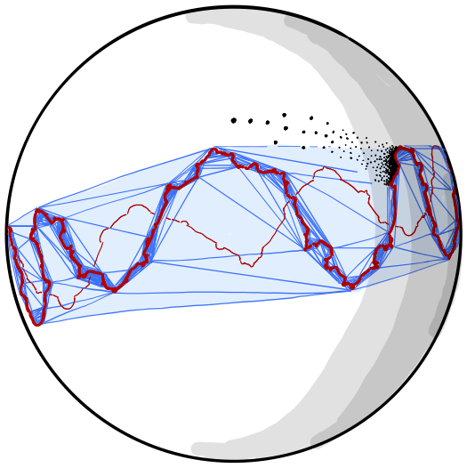

Home
Research
Teaching
Research
Papers and Preprints
The infimum of the dual volume of convex co-compact hyperbolic 3-manifolds
,
Preprint
arXiv:2101.09380
, submitted.
Constant Gaussian curvature foliations and Schläfli formulas of hyperbolic 3-manifolds
,
Preprint
arXiv:1910.06203
, submitted.
The dual volume of quasi-Fuchsian manifolds and the Weil-Petersson distance
,
Preprint
arXiv:1808.08936
, submitted.
The dual Bonahon-Schläfli formula
,
Preprint
arXiv:1808.08936
, Algebraic & Geometric Topology 21-1 (2021), 279--315. DOI
10.2140/agt.2021.21.279
.
Intertwining operators of the quantum Teichmüller space
,
Preprint
arXiv:1610.06056
, under revision.
